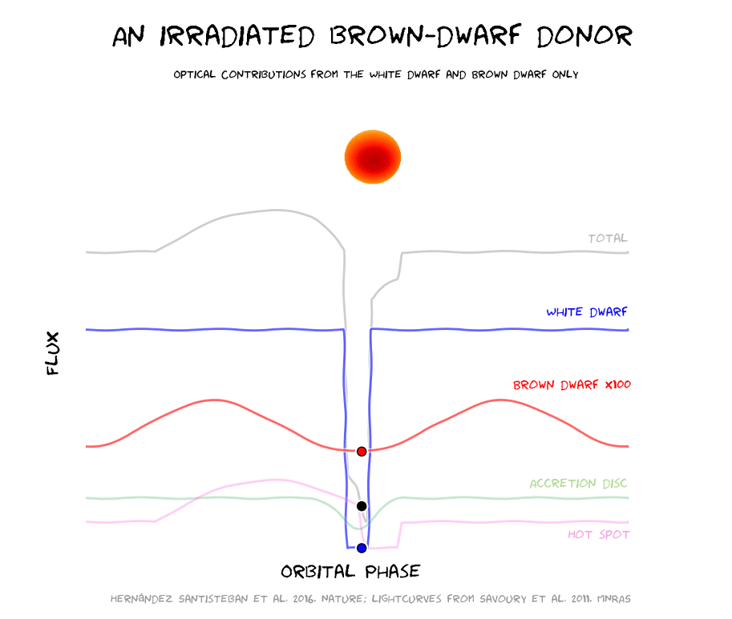
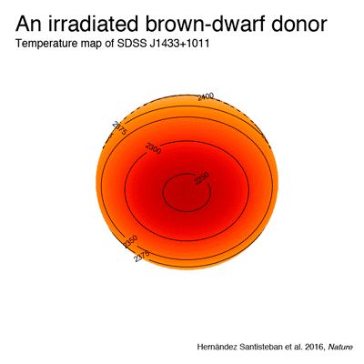

Stellar Cannibalism
An irradiated brown-dwarf companion to an accreting white dwarf
This work appeared on the journal Nature on May 19, 2016.
This binary system consists of a white dwarf (the remnant of a star just like our Sun) and a very low mass star in a very tight orbit (just a few hours). Given their close proximity, the low mass star (the donor) is actually deformed by the gravitational potential of the white dwarf in the shape of a teardrop. Eventually, mass overflows onto the white dwarf creating an accretion disc. This process can make the donor lose most of its mass (about ~90%). As the donor loses mass, it is expected that the donor will become so small that it will stop to fuse hydrogen in its core. This critical transition, never observed before, transforms a star to a sub-stellar object, known as a brown dwarf.

In this work, we present the first direct detection and model-independent measurement of such a system that survived the transition. We used the Very Large Telescope (VLT) in Cerro Paranal, Chile to observe a very faint system, the accreting white dwarf SDSS J1433+1011.
The unique capabilities of the X-Shooter instrument at the VLT, allows observing objects from the ultraviolet all the way to near infrared simultaneously. Only by using this approach, we were able to dissect the hidden signal from the brown dwarf. Furthermore, our time-resolved spectroscopy allowed us to retrieve a surface temperature map of the donor as it orbited the white dwarf. This revealed a clear temperature difference between the day-side (the face that sees the white dwarf at all times) and the night-side of 55 kelvin with maximum differences of 200 kelvin.
This important measurement leads us to our second major result. Many sub-stellar objects have been observed as close giant-planets orbiting their host stars, the so-called “hot-Jupiters”. There, the energy that impacts the planet overwhelms any internal heat flux and dominates the energy balance of the star. However, these accreting white dwarfs open the possibility of using them as new benchmarks to study the physics of sub-stellar atmospheres in an unexplored regime, where the internal energy is comparable to the irradiation from the white dwarf. It allows us to characterise properties such as the energy transport inside the brown dwarf and the amount of energy reflected back into space. In combination with state-of-the-art simulations, we can better understand the internal dynamics in the atmospheres of these objects.

Collaborators
Juan.V. Hernández Santisteban [1],
Christian Knigge [1],
Stuart P. Littlefair [2],
Rene P. Breton [1,3],
Vikram S. Dhillon [2,4],
Boris T. Gänsicke [5],
Thomas R. Marsh [5],
Magaretha L. Pretorius [6],
John Southworth [7] &
Peter H. Hauschildt [8]
[1] University of Southampton,
[2] University of Sheffield,
[3] University of Manchester
[4] Instituto de Astrofísica de Canarias,
[5] University of Warwick,
[6] University of Oxford,
[7] Keele University,
[8] Hamburger Sternwart.
Acknowledgements
This work was supported by CONACyT (Mexico) and the University of Southampton, as well as research support from the Royal Astronomical Society.